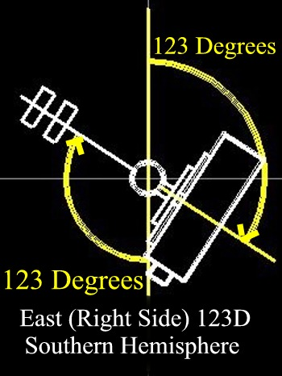
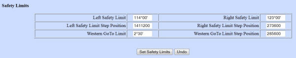

Fig 1. Click on image for larger image.
Another way to think of the "side" of the pier that your scope is on -- it's the side with the center of the saddle. That seems obvious, but if your scope is long and you are near the vertical with the counterweight shaft, the aperture or opposite end of the scope may be across the meridian (or the object you're pointing at is across the meridian.) The saddle is always clearly in one side or the other. This way, it doesn't matter what you are pointing at in the sky, you're always setting a limit or a model for the side that the center of the saddle is on, not what you're looking at.
|
Fig 1. Click on image for larger image. |
 Figure 2. |
 Figure 3. |
Fig 1. and Fig 4. show the relationship of the different in limits between the northern hemisphere and the southern hemisphere. The Limits are switched between the hemispheres as far as east and west is concerned, but stay the same for left and right. Left and Right is determined by standing in front of the telescope with you back to your respective pole. In figures 2, 3, 5, and 6, you see the angles that are default for the G8, G11, Titan and Titan 50.
The MI-250 angles are different, and should be 92 for the Left limit and 95 degrees for the Right limit.
Note: the Hemisphere is selected totally by the sign of the Latitude in any of the Gemini hardware versions. Positive for Northern Hemisphere and negative for Southern Hemisphere. No switches to change at all.
Note: changing the mount type from the hand controller or web interface does not change the safety limits that are set.
Note: see Reset SRAM so your changes are stored long term.
 Fig 4. Click on image for larger image. |
 Figure 5. |
 Figure 6. |
 Fig 7. Click on image for larger image |
 Fig 8 The Eastern Position, Western Position, and Western Goto Limit buttons do take you to the hand-controller menu pages. Please Note: changing the mount type from the hand controller or web interface does not change the safety limits that are set. Also please see Reset SRAM |
The limits can be set either using the Web interface, on the Mount Selection Page, See Fig 7. or on the hand controller see figure 8. (it is under: Menu-->Mount-->Limits Note that the Web limits are set for left and right side, while the hand controller uses East and West. If using the hand controller, follow these steps.
|